In total, there are 12 variables including our binary target variable stroke.
2. Data Cleaning & Wrangeling
2.1 Data Exploration
Let’s get a feeling for the distribution of our data:
# Generate summary of your data framesummary_table <-summary(stroke_tb)# Convert the summary to a data frame & display it with kablesummary_table <-as.data.frame.matrix(summary_table)kable(as.data.frame(summary_table), row.names =FALSE)
id
gender
age
hypertension
heart_disease
ever_married
work_type
Residence_type
avg_glucose_level
bmi
smoking_status
stroke
Min. : 67
Length:5110
Min. : 0.08
Min. :0.00000
Min. :0.00000
Length:5110
Length:5110
Length:5110
Min. : 55.12
Length:5110
Length:5110
Min. :0.00000
1st Qu.:17741
Class :character
1st Qu.:25.00
1st Qu.:0.00000
1st Qu.:0.00000
Class :character
Class :character
Class :character
1st Qu.: 77.25
Class :character
Class :character
1st Qu.:0.00000
Median :36932
Mode :character
Median :45.00
Median :0.00000
Median :0.00000
Mode :character
Mode :character
Mode :character
Median : 91.89
Mode :character
Mode :character
Median :0.00000
Mean :36518
NA
Mean :43.23
Mean :0.09746
Mean :0.05401
NA
NA
NA
Mean :106.15
NA
NA
Mean :0.04873
3rd Qu.:54682
NA
3rd Qu.:61.00
3rd Qu.:0.00000
3rd Qu.:0.00000
NA
NA
NA
3rd Qu.:114.09
NA
NA
3rd Qu.:0.00000
Max. :72940
NA
Max. :82.00
Max. :1.00000
Max. :1.00000
NA
NA
NA
Max. :271.74
NA
NA
Max. :1.00000
Our Dataset has a few categorical variables. As a machine learning model needs numerical inputs, we need to convert and encode them later. Let’s create a list of categorical and numerical columns:
categorical_variables <-names(stroke_tb)[sapply(stroke_tb,is.character)]numerical_variables <-names(stroke_tb)[sapply(stroke_tb, is.numeric)]# Use sprintf to format the message, then cat to print it with line breakscat(sprintf("Categorical features: %s\nNumerical features: %s",paste(categorical_variables, collapse =", "),paste(numerical_variables, collapse =", ")))
The dataset is fairly clean. Only the the features bmi and smoking_status have missing values. Let’s change all missing values to N/A and ensure that bmi is recognized as a numerical variable. Additionally, the id column will be removed, because it is of no use for the future.
We update the lists of categorical and numerical columns, as `bmi` is now a double.
categorical_variables_1 <-names(cleaned_stroke_tb)[sapply(cleaned_stroke_tb,is.character)]numerical_variables <-names(cleaned_stroke_tb)[sapply(cleaned_stroke_tb, is.numeric)]# Use sprintf to format the message, then cat to print it with line breakscat(sprintf("Categorical features: %s\nNumerical features: %s",paste(categorical_variables_1, collapse =", "),paste(numerical_variables, collapse =", ")))
As we would like to keep as many observations as possible in our dataset, we replace the N/As with the median for bmi and the modal value for smoking_status.
# Calculate the median for bmi and the mode for smoking_statusbmi_median <-median(cleaned_stroke_tb$bmi, na.rm =TRUE)smoking_status_mode <-names(which.max(table(cleaned_stroke_tb$smoking_status, useNA ="no")))# Create preprocessed data by replacing NA valuespreprocessed_stroke_tb <- cleaned_stroke_tb %>%mutate(bmi =ifelse(is.na(bmi), bmi_median, bmi),smoking_status =ifelse(is.na(smoking_status), smoking_status_mode, smoking_status) )preprocessed_stroke_tb
To make use of our categorical variables in our predictive model, we need to convert them into dummy variables. We use the fastDummies package for the One Hot Encoding.
Multicollinearity between the different features will be a problem for our model. It will be treated in the Correlation Analysis.
categorical_variables <-names(encoded_stroke_tb)[sapply(encoded_stroke_tb,is.integer)]numerical_variables <-names(encoded_stroke_tb)[sapply(encoded_stroke_tb, is.double)]# Use sprintf to format the message, then cat to print it with line breakscat(sprintf("Categorical features: %s\nNumerical features: %s",paste(categorical_variables, collapse =", "),paste(numerical_variables, collapse =", ")))
Looking at the encoded stroke dataset for the categorical variables, we notice that there are only 3 non-binary quantitative variables : age, average glucose level and bmi. To visualize outliers in each of these variables, we use boxplots. The points outside the range delimited by the whiskers are the outliers.
# Boxplot for Ageboxplot(encoded_stroke_tb$age, main="Boxplot of Age", ylab="Age", col="lightblue")
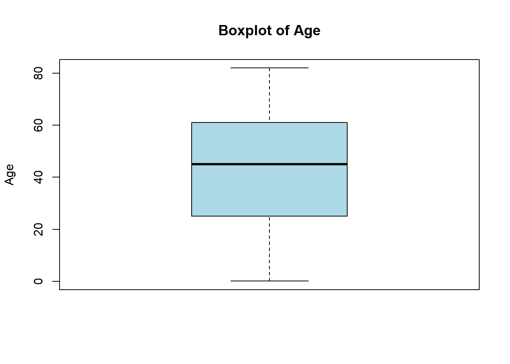
# Boxplot for Average Glucose Levelboxplot(encoded_stroke_tb$avg_glucose_level, main="Boxplot of Average Glucose Level", ylab="Average Glucose Level", col="lightgreen")
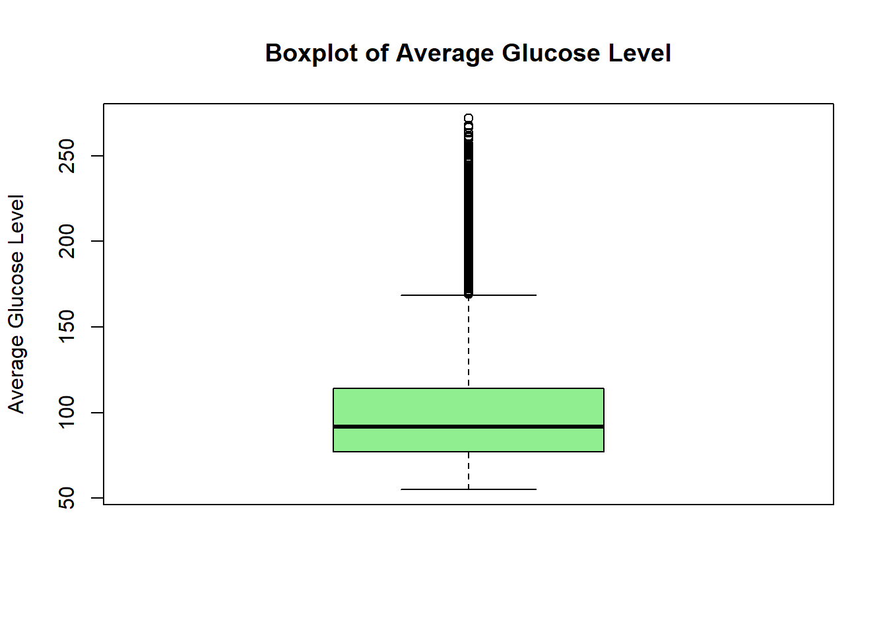
# Boxplot for BMIboxplot(encoded_stroke_tb$bmi, main="Boxplot of BMI", ylab="BMI", col="lightcoral")
#We use the IQR method to identify outliersidentify_outliers <-function(column) { Q1 <-quantile(column, 0.25) Q3 <-quantile(column, 0.75) IQR <- Q3 - Q1 lower_bound <- Q1 -1.5* IQR upper_bound <- Q3 +1.5* IQR# Identify Outliers outliers <- column[column < lower_bound | column > upper_bound]return(outliers)}# Apply the function to the variablesoutliers_age <-identify_outliers(encoded_stroke_tb$age)outliers_glucose <-identify_outliers(encoded_stroke_tb$avg_glucose_level)outliers_bmi <-identify_outliers(encoded_stroke_tb$bmi)#We create a function count_outliers that we will use to identify and count outliers in each non-binary quantitative variable count_outliers <-function(column) { Q1 <-quantile(column, 0.25, na.rm =TRUE) Q3 <-quantile(column, 0.75, na.rm =TRUE) IQR <- Q3 - Q1 lower_bound <- Q1 -1.5* IQR upper_bound <- Q3 +1.5* IQR# Count outliersoutlier_count <-sum(column < lower_bound | column > upper_bound, na.rm =TRUE)return(outlier_count)}# Create a vector to hold the outlier countsoutlier_counts <-sapply(encoded_stroke_tb[, c("age", "avg_glucose_level", "bmi")], count_outliers)
Finding zero outliers for age indicates a relatively normative distribution among stroke patients, suggesting accurate and reliable data. With a dataset containing 5,110 rows, the identification of 627 outliers for average glucose levels, representing approximately 12.25% of the total population, and 126 outliers for Body Mass Index (BMI), constituting about 2.47%, highlights disparities in the distribution of these health metrics. The notably higher percentage of glucose level outliers suggests a prevalence of extreme values that may indicate issues with glycemic control among individuals in this population. The presence of a relatively significant number of outliers, particularly in average glucose levels, can skew the dataset’s overall mean and standard deviation, potentially leading to misleading interpretations. These outliers may disproportionately influence statistical models, such as the regression analyses, affecting outcomes and relationships. Hence, it will be essential to assess the impact of these outliers on model performance and prioritize careful handling, whether through removal, transformation, or separate analyses, to ensure robust conclusions and accurate insights. The presence of many outliers can sometimes point to measurement errors or inconsistencies in data collection.
To have a better view on the distribution of values, we can also create histograms.
hist(encoded_stroke_tb$age, breaks=30, main="Histogram of Age", xlab="Age", col="lightblue", border="black")
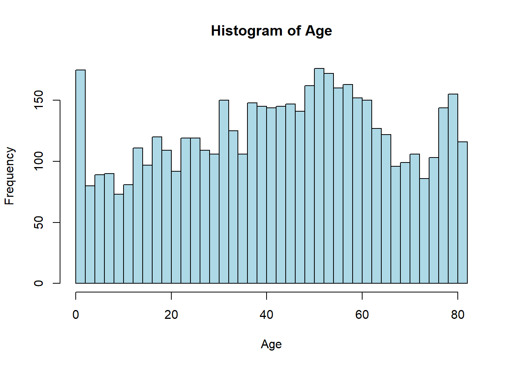
# Histogram for Average Glucose Levelhist(encoded_stroke_tb$avg_glucose_level, breaks=30, main="Histogram of Average Glucose Level", xlab="Average Glucose Level", col="lightgreen", border="black")
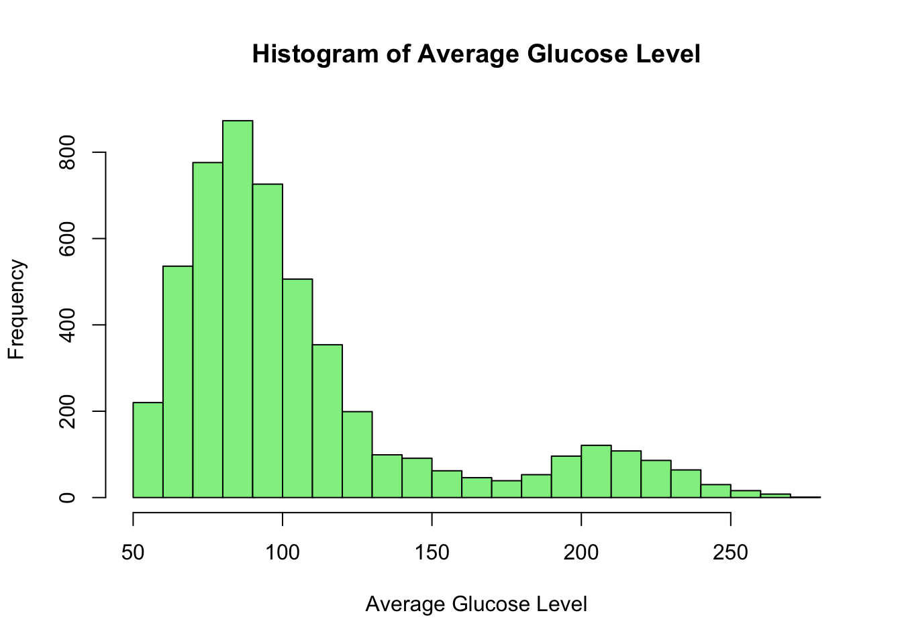
# Histogram for BMIhist(encoded_stroke_tb$bmi, breaks=30, main="Histogram of BMI", xlab="BMI", col="lightcoral", border="black")
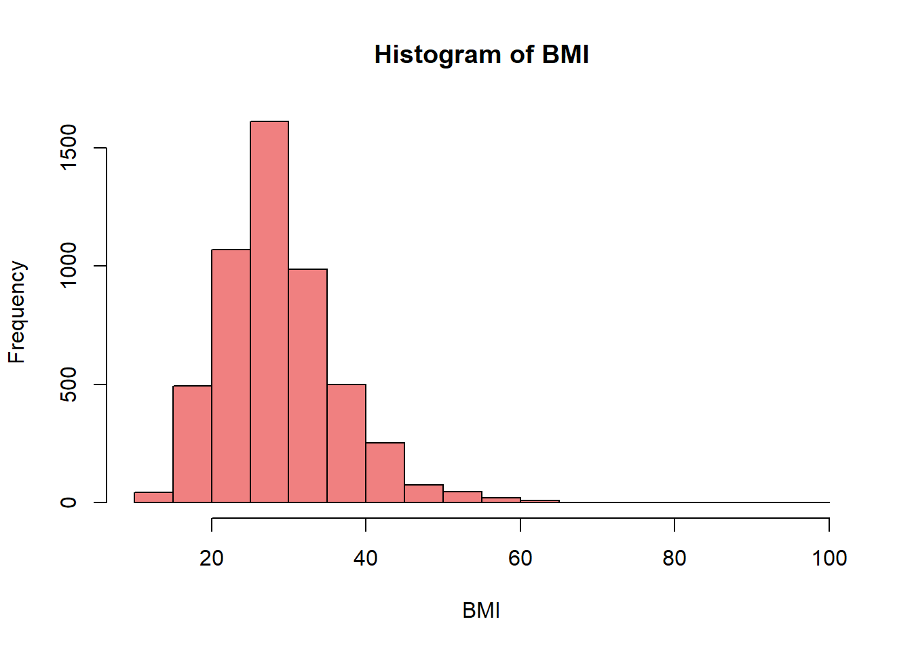
Now that we have conducted the analysis of the non-binary variables, we check the distribution of the binary variables.
# Distribution of Gender Maletable(encoded_stroke_tb$gender_Male)
0 1
2995 2115
ggplot(encoded_stroke_tb, aes(x=factor(gender_Male))) +geom_bar() +labs(x='1 if gender is Male, 0 if not', y='Count', title='Distribution of Male gender')
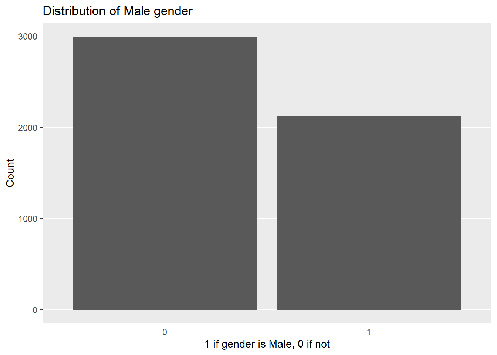
# Distribution of Gender Femaletable(encoded_stroke_tb$gender_Female)
0 1
2116 2994
ggplot(encoded_stroke_tb, aes(x=factor(gender_Female))) +geom_bar() +labs(x='1 if gender is Female, 0 if not', y='Count', title='Distribution of Female gender')
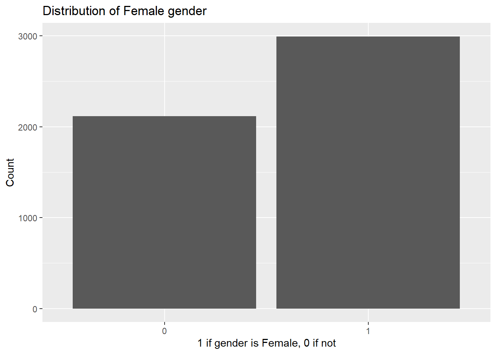
# Distribution of Gender Othertable(encoded_stroke_tb$gender_Other)
0 1
5109 1
ggplot(encoded_stroke_tb, aes(x=factor(gender_Other))) +geom_bar() +labs(x='1 if gender is Other, 0 if not', y='Count', title='Distribution of Other gender')
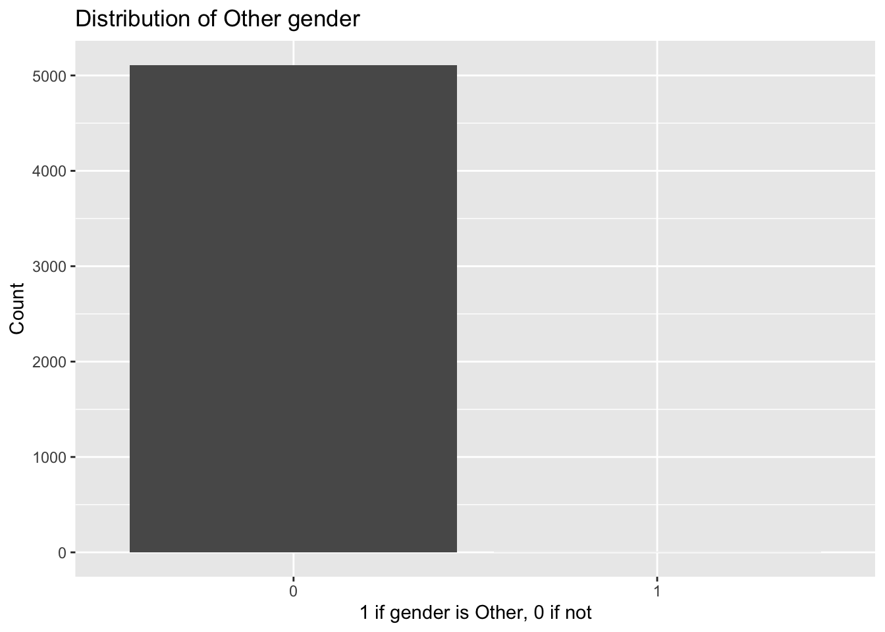
# Distribution of Ever Married table(encoded_stroke_tb$ever_married_Yes)
0 1
1757 3353
ggplot(encoded_stroke_tb, aes(x=factor(ever_married_Yes))) +geom_bar() +labs(x='1 if Ever Married, 0 if not', y='Count', title='Distribution of Ever Married Status')
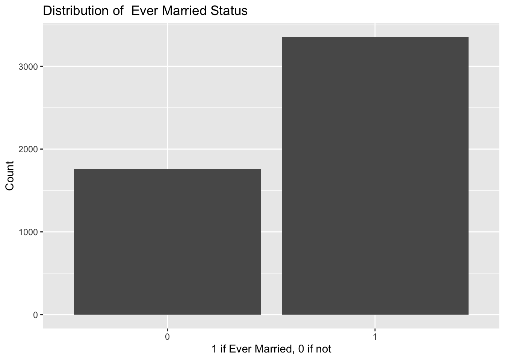
# Distribution of Never Married table(encoded_stroke_tb$ever_married_No)
0 1
3353 1757
ggplot(encoded_stroke_tb, aes(x=factor(ever_married_No))) +geom_bar() +labs(x='1 if Never Married, 0 if not', y='Count', title='Distribution of Never Married Status')
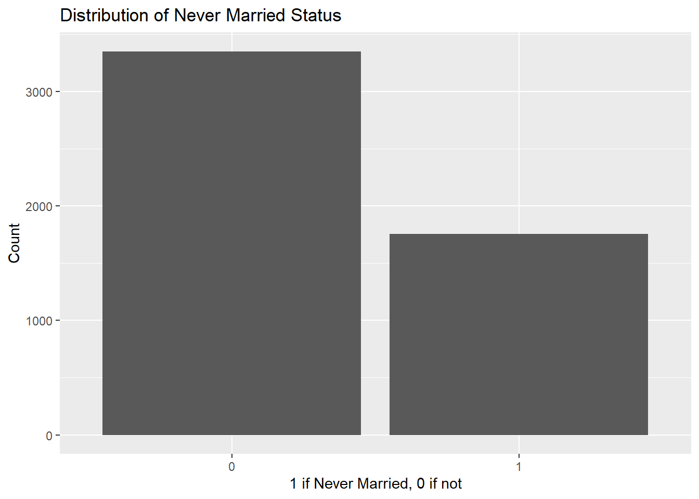
# Distribution of Work Type is Childrentable(encoded_stroke_tb$work_type_children)
0 1
4423 687
ggplot(encoded_stroke_tb, aes(x=factor(work_type_children))) +geom_bar() +labs(x='1 if Work Type is Children, 0 if not', y='Count', title='Distribution of Work Type is Children')
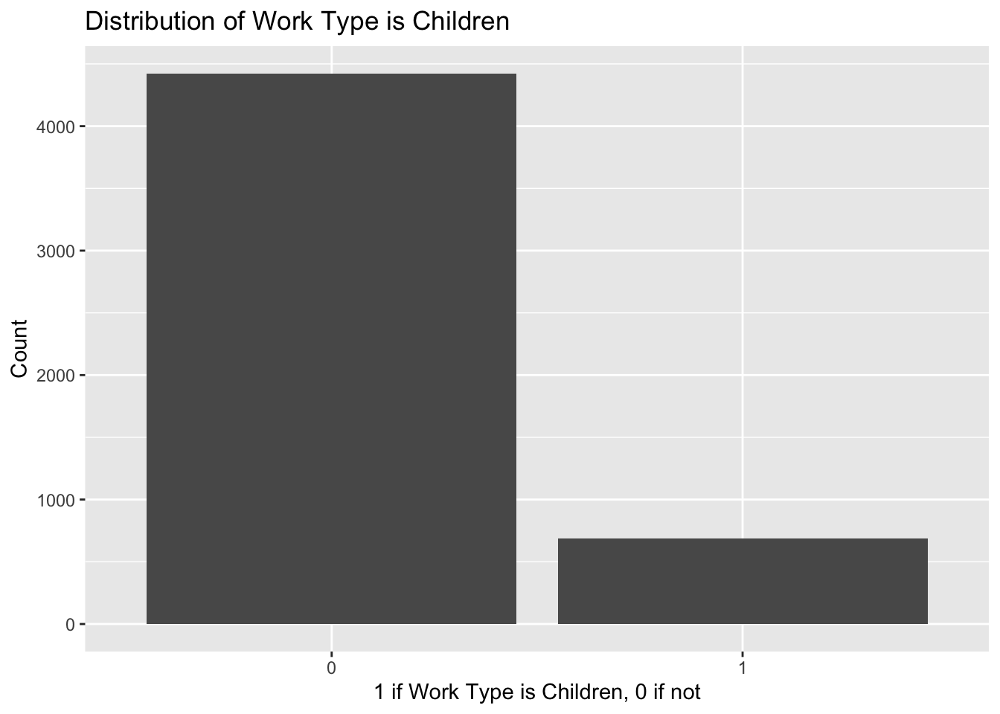
# Distribution of Work Type is Government jobtable(encoded_stroke_tb$work_type_Govt_job)
0 1
4453 657
ggplot(encoded_stroke_tb, aes(x=factor(work_type_Govt_job))) +geom_bar() +labs(x='1 if Work Type is Government Job, 0 if not', y='Count', title='Distribution of Work Type is Government Job')
# Distribution of Work Type is Never workedtable(encoded_stroke_tb$work_type_Never_worked)
0 1
5088 22
ggplot(encoded_stroke_tb, aes(x=factor(work_type_Never_worked))) +geom_bar() +labs(x='1 if Work Type is Never Worked, 0 if not', y='Count', title='Distribution of Work Type is Never worked')
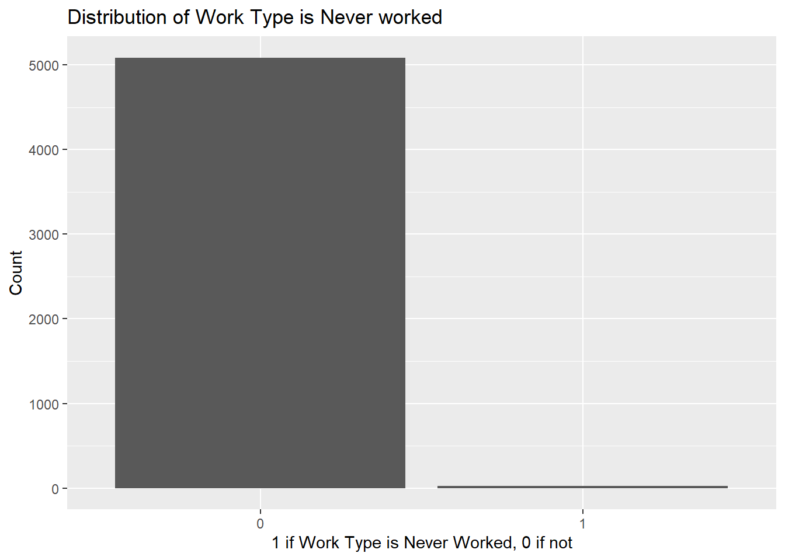
# Distribution of Work Type is Privatetable(encoded_stroke_tb$work_type_Private)
0 1
2185 2925
ggplot(encoded_stroke_tb, aes(x=factor(work_type_Private))) +geom_bar() +labs(x='1 if Work Type is Private, 0 if not', y='Count', title='Distribution of Work Type is Private')
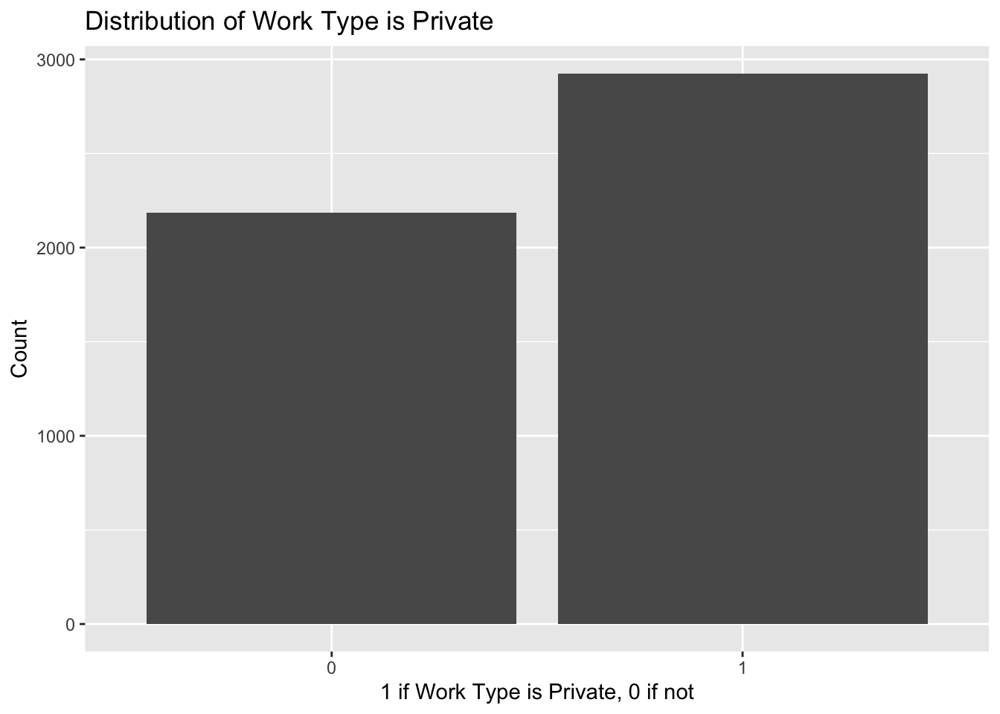
# Distribution of Work Type is Self-empployedtable(encoded_stroke_tb$`work_type_Self-employed`)
0 1
4291 819
ggplot(encoded_stroke_tb, aes(x=factor(`work_type_Self-employed`))) +geom_bar() +labs(x='1 if Work Type is Self-employed, 0 if not', y='Count', title='Distribution of Work Type is Self-employed')
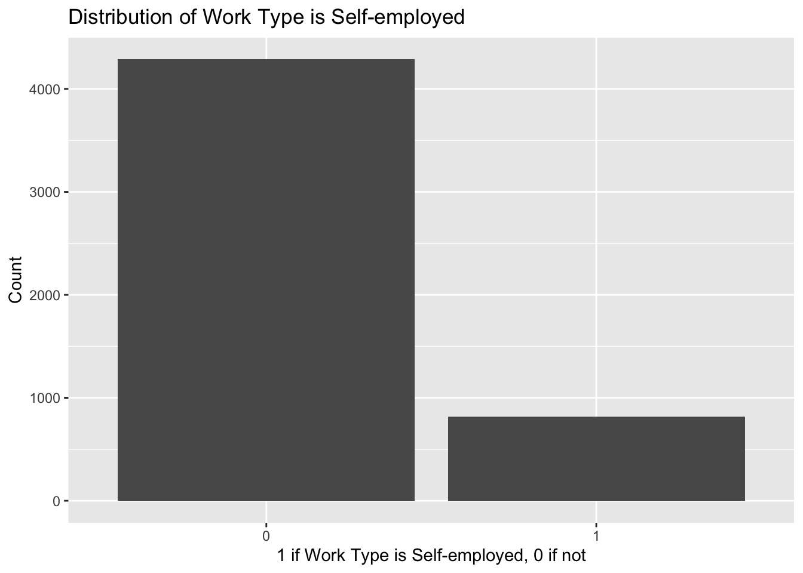
# Distribution of Residence Type is Ruraltable(encoded_stroke_tb$Residence_type_Rural)
0 1
2596 2514
ggplot(encoded_stroke_tb, aes(x=factor(`Residence_type_Rural`))) +geom_bar() +labs(x='1 if Residence Type is Rural, 0 if not', y='Count', title='Distribution of Residence Type is Rural')
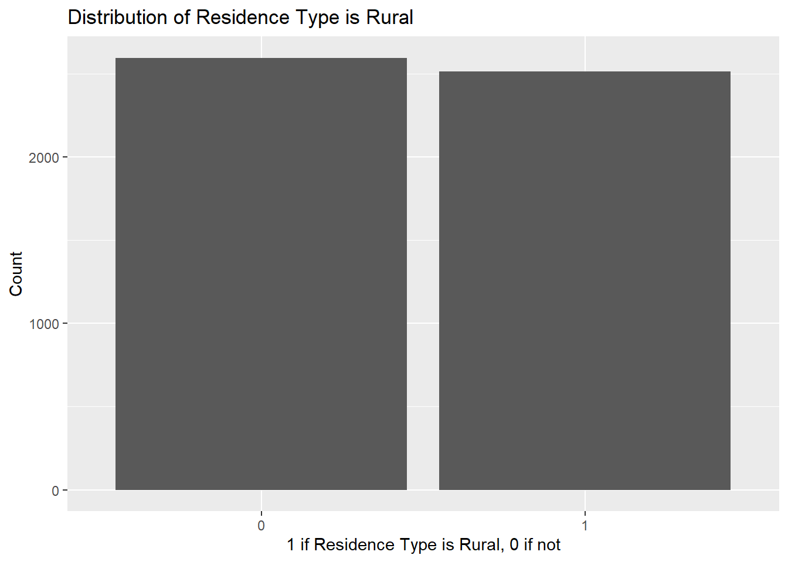
# Distribution of Residence Type is Urbantable(encoded_stroke_tb$Residence_type_Urban)
0 1
2514 2596
ggplot(encoded_stroke_tb, aes(x=factor(`Residence_type_Urban`))) +geom_bar() +labs(x='1 if Residence Type is Urban, 0 if not', y='Count', title='Distribution of Residence Type is Urban')
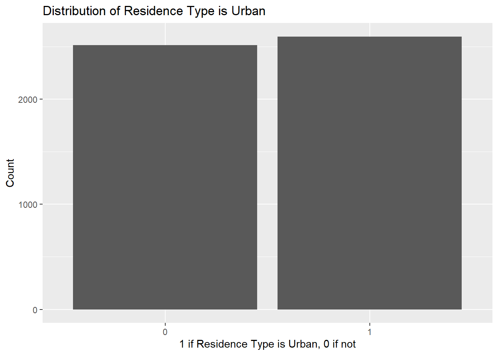
# Distribution of Formerly Smoked Statustable(encoded_stroke_tb$`smoking_status_formerly smoked`)
0 1
4225 885
ggplot(encoded_stroke_tb, aes(x=factor(`smoking_status_formerly smoked`))) +geom_bar() +labs(x='1 if Formerly Smoked, 0 if not', y='Count', title='Distribution of Formerly Smoked Status')
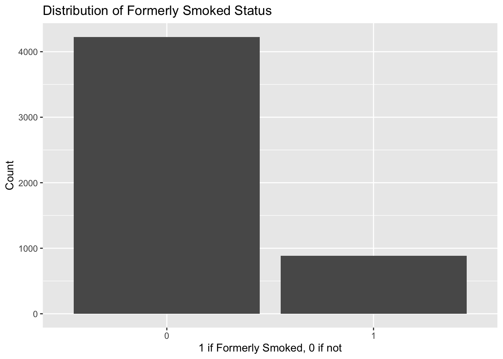
# Distribution of Never Smoked Statustable(encoded_stroke_tb$`smoking_status_never smoked`)
0 1
1674 3436
ggplot(encoded_stroke_tb, aes(x=factor(`smoking_status_never smoked`))) +geom_bar() +labs(x='1 if Never Smoked, 0 if not', y='Count', title='Distribution of Never Smoked Status')
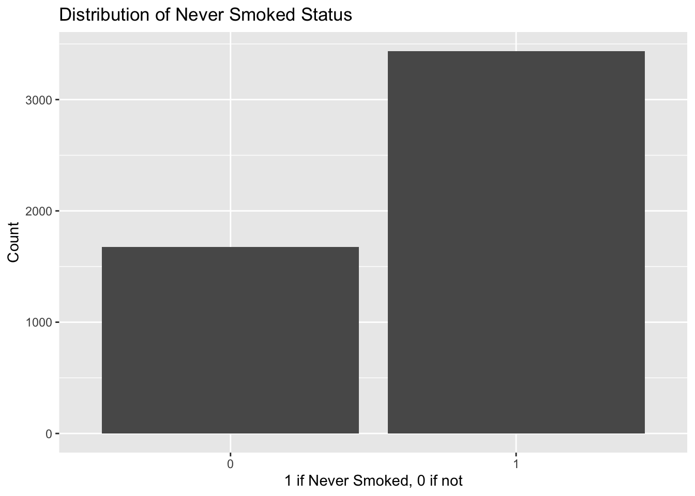
# Distribution of Smokes Statustable(encoded_stroke_tb$smoking_status_smokes)
0 1
4321 789
ggplot(encoded_stroke_tb, aes(x=factor(`smoking_status_smokes`))) +geom_bar() +labs(x='1 if Smokes, 0 if not', y='Count', title='Distribution of Smokes Status')
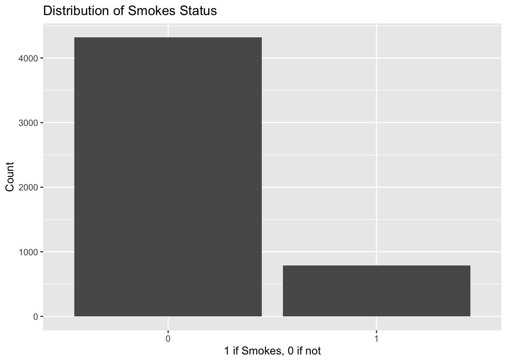
Looking at the barplot for gender is “Other”, it seems that there is no case where gender is “Other” in the dataset. However, by executing the line of code below, we notice that there is one case where gender is “Other”.
Another plot showing an interesting pattern is the distribution of “Work Type is Never worked”. The low representation of this former category may suggest that this group is under-represented, which can often lead to instability in outlier identification and might necessitate further scrutiny of their characteristics.
The distribution of residence type between rural and urban appears to be quiet equitable and can provide valuable insights into demographic representation.
2.6 Dataset Balancing
# Distribution of strokes vs no strokes in the sampletable(encoded_stroke_tb$stroke)
0 1
4861 249
ggplot(encoded_stroke_tb, aes(x=factor(`stroke`))) +geom_bar() +labs(x='0 no strokes, 1 strokes', y='Count', title='Distribution of strokes')
# count how many people had a stroke and the propencoded_stroke_tb %>%group_by(stroke) %>%summarize(count =n()) %>%mutate(proportion =round(count /sum(count), 2))
The dataset shows that most individuals do not have strokes. However, such an imbalance can negatively impact model performance, as models may become biased towards the majority class, leading to poor prediction accuracy for minority cases, such as strokes. To address this, we can use dataset balancing techniques to adjust the proportions of stroke and no-stroke cases. This can be done through down-sampling (reducing the number of no-stroke cases) or up-sampling (increasing the number of stroke cases).
Since the dataset contains only 5,110 individuals, I chose to up-sample the minority class to avoid losing valuable data that could be discarded in down-sampling. By up-sampling, we can enhance the representation of stroke cases, which helps the model learn more effectively and improve prediction accuracy for both classes.
# Load caret librarylibrary(caret)
Lade nötiges Paket: lattice
Attache Paket: 'caret'
Das folgende Objekt ist maskiert 'package:purrr':
lift
# Convert 'stroke' to a factor, if it isn't alreadyencoded_stroke_tb$stroke <-as.factor(encoded_stroke_tb$stroke)# Use upSample to balance the datasetbalanced_stroke_tb <-upSample(x = encoded_stroke_tb[, names(encoded_stroke_tb) !="stroke"],y = encoded_stroke_tb$stroke,yname ="stroke")# Check the distribution to confirm balancingtable(balanced_stroke_tb$stroke)
0 1
4861 4861
Are the proportions of variables such as age, gender, and hypertension in the up-sampled stroke cases similar to those in the original stroke cases?
When we up-sample the minority class (stroke cases), we create artificial (or duplicated) rows to balance the dataset. In most basic up-sampling methods, like simple random sampling with replacement, these additional rows are duplicates of existing stroke cases. As a result, the distribution of other variables/columns (such as age, BMI, etc.) among stroke cases in the balanced dataset will match the original proportions found in the smaller stroke class of the initial dataset.
3. Exploratory Data Analysis
3.1 Descriptive Statistics
# Basic Information: Start by loading the dataset and using functions like .info() and .describe() to get a sense of its size, data types, and statistical distribution. Look for null values, data types, and any inconsistencies (e.g., unexpected characters or formats)# Target Variable: Assess the distribution of the target variable (stroke occurrence). Since stroke prediction is likely to involve a class imbalance, check for it here by calculating the percentage of stroke vs. non-stroke cases.
3.2 Univariate Analysis
#Continuous Variables: Plot histograms or KDE plots for each continuous variable (e.g., age, blood pressure, BMI) to see their distribution and check for skewness or outliers.# Categorical Variables: Use bar charts to assess distributions of categorical variables (e.g., gender, smoking status). For each category, look for values with low frequencies or irrelevant categories.
3.3 Correlation Analysis
3.3.1 Target Variable Analysis
In the first part of the correlation analysis, we examine how predictor variables are correlated with our target variable stroke. Let’ start with all the continuous predictors:
ggplot(encoded_stroke_tb, aes(x =factor(stroke), y = age)) +geom_violin() +labs(x ="Stroke Occurrence", y ="Age", title ="Age Distribution by Stroke Occurrence") +theme_minimal()
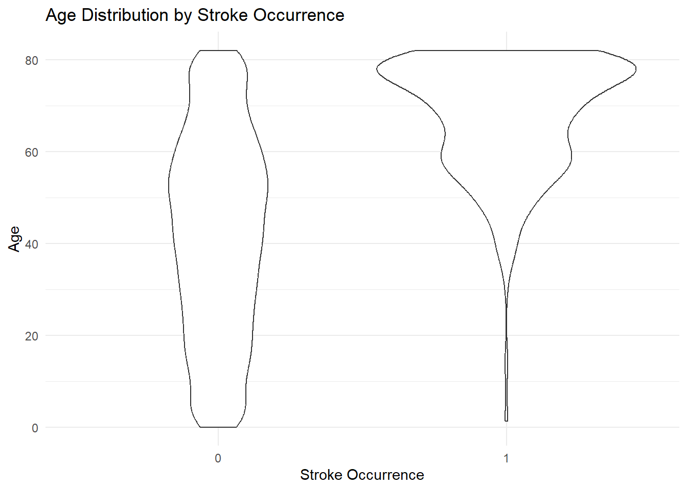
library(shiny)library(plotly)
Attache Paket: 'plotly'
Das folgende Objekt ist maskiert 'package:ggplot2':
last_plot
Das folgende Objekt ist maskiert 'package:stats':
filter
Das folgende Objekt ist maskiert 'package:graphics':
layout
library(dplyr)# Shiny UI for selecting the variableshinyApp(ui =fluidPage(selectInput("selected_variable", "Choose a Variable:", choices = numerical_variables),plotlyOutput("violin_plot") ),server =function(input, output) { output$violin_plot <-renderPlotly({ selected_variable <- input$selected_variable# Generate the violin plot using the selected variable nameplot_ly(encoded_stroke_tb, x =~factor(stroke), y =as.formula(paste0("~", selected_variable)), type ="violin",box =list(visible =TRUE),meanline =list(visible =TRUE)) %>%layout(title =paste("Violin Plot of", selected_variable, "by Stroke"),xaxis =list(title ="Stroke"),yaxis =list(title = selected_variable) ) }) })
# Shiny UI for selecting the variableshinyApp(ui =fluidPage(selectInput("selected_variable", "Choose a Variable:", choices = categorical_variables_1),plotlyOutput("stacked_bar_chart") ),server =function(input, output) { output$stacked_bar_chart <-renderPlotly({ selected_variable <- input$selected_variable# Generate the stacked bar chart data plot_data <- preprocessed_stroke_tb %>%count(stroke =as.factor(stroke), category =as.factor(!!sym(selected_variable))) %>%rename(count = n)# Create the stacked bar chartplot_ly(plot_data, x =~stroke, y =~count, color =~category,type ="bar") %>%layout(barmode ="stack",title =paste("Stacked Bar Chart of", selected_variable, "by Stroke"),xaxis =list(title ="Stroke"),yaxis =list(title ="Count"),legend =list(title =list(text = selected_variable))) }) })
3.3.2 Bivariate Analysis
Correlation Matrix, Chi-Square test for dependencies between categorical variables
numeric_columns <- encoded_stroke_tb %>%select(where(is.double))# Calculate the correlation matrixcorrelation_matrix <-cor(numeric_columns, use ="complete.obs")# Convert the correlation matrix to a format that plotly can useheatmap_data <-as.data.frame(as.table(correlation_matrix))# Plot the correlation matrix as a heatmapplot_ly(x =colnames(correlation_matrix),y =rownames(correlation_matrix),z = correlation_matrix,type ="heatmap",colorscale ="Viridis"# Corrected typo) %>%layout(title ="Correlation Matrix Heatmap",xaxis =list(title ="", tickangle =45),yaxis =list(title ="") )
3.3.3 Multivariate Analysis
Mulitcollinearity & Interactions
3.4 Feature Scaling
Classification algorithms are often sensitive to scales. To prevent perturbations we standardize all continuous features in the dataset.
–> finished balanced dataset as input :
scaled_stroke_tb <- encoded_stroke_tb#Scale only the double columnsscaled_stroke_tb[sapply(scaled_stroke_tb, is.double)] <-lapply(scaled_stroke_tb[sapply(scaled_stroke_tb, is.double)], scale)scaled_stroke_tb <-as_tibble(scaled_stroke_tb)scaled_stroke_tb